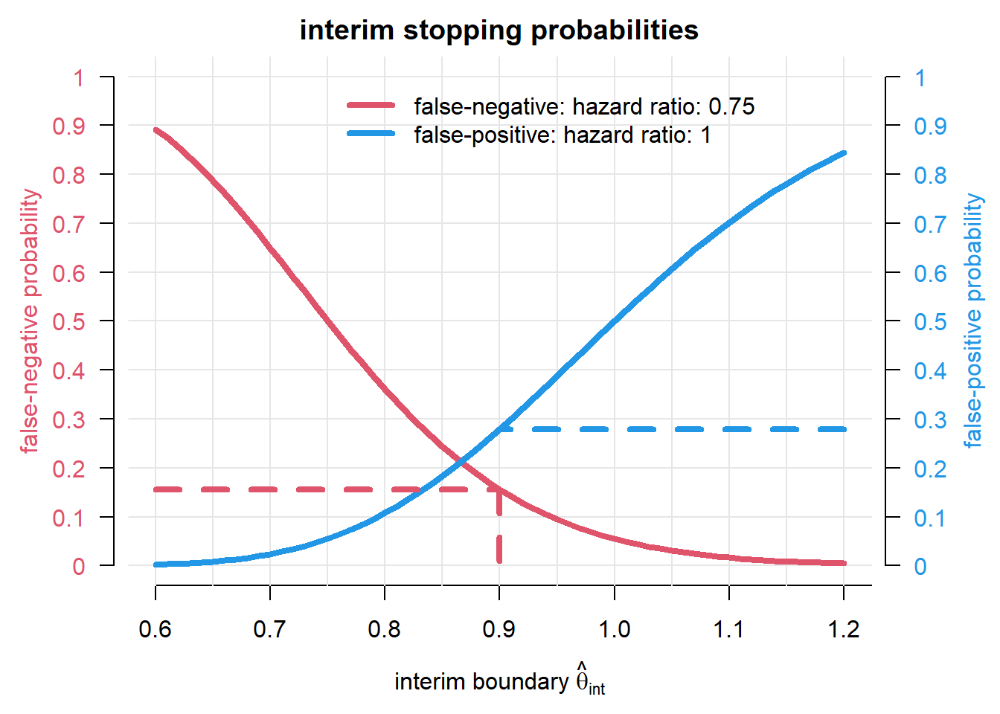

Advanced group-sequential and adaptive confirmatory clinical trial designs, with R practicals using rpact: Efficient use of futility and efficacy interim analyses in group-sequential designs
Author
Affiliation
Kaspar Rufibach
Methods, Collaboration, and Outreach Group (MCO), PD Data and Statistical Sciences, Roche Basel
# design parametersalpha <-0.05beta <-0.2m1 <-6*12m2 <-8*12hr <- m1 / m2# constant for computation of variance for log(hr)# as a function of P(randomized to A)pA <-1/2# 1:1 randomizationkappa <- (pA * (1- pA)) ^ (-1)# timing parametersdout1 <-0.025dout2 <-0.025douttime <-12accrualTime <-0:6accrualIntensity <-seq(6, 42, by =6)maxNumberOfSubjects <-1200# informal futility boundaryinform_bound <-1
4 How much do we gain with interim analyses?
The following code allows to compute all the numbers that appear in the first section of the slide deck. We do not show all the numbers here and invite everyone to get them out of the corresponding objects.
The standard rpact output provides a median unbiased estimate. For details on the various types of biases in group-sequential designs and approaches we refer to Wassmer and Brannath (2016).
5.1.2 Adding a late efficacy interim
In what follows, we generate the table used in the slide deck to illustrate addition of a late efficacy interim analysis.
As a first approach to determine an interim boundary for futility we reproduce the conditional power plot.
# calculate condition power for interim HR ranging from 0.6 to 1.5hrs <-seq(0.6, 1.5, by =0.01)cpower0 <-rep(NA,length(hrs))cpower <- cpower0for (i in1:length(hrs)){# generate dataset that contains result up to interim results <-getDataset(overallEvents = nevents_i1[1],overallLogRanks =log(hrs[i]) /sqrt(kappa /nevents_i1[1]),overallAllocationRatio =1)# proper object that can be used by rpact stageResults <-getStageResults(design, dataInput = results, directionUpper =FALSE)# compute conditional power under H1: theta_1 = 0.75 cpower[i] <-getConditionalPower(stageResults, nPlanned =diff(nevents_i1), thetaH1 = hr)$conditionalPower[3]# compute conditional power under H0: theta_1 = 1 cpower0[i] <-getConditionalPower(stageResults, nPlanned =diff(nevents_i1), thetaH1 =1)$conditionalPower[3]}# what interim effect gives a conditional power of 20%?condpow <-0.2hr_int_cp <-min(hrs[cpower <= condpow])hr_int_cp
[1] 1.28
# p-value corresponding to that effect# z = log(hr_int_cp) / sqrt(kappa / D_int) --> p = P(N(0, 1) <= z) = 1 - Phi(|z|)z <--log(hr_int_cp) /sqrt(kappa / nevents_i1[1])p_int_cp <-1-pnorm(z)p_int_cp
Here you can find more details on conditional power computations in rpact, and also how to switch between different scales, i.e. Z-score, hazard ratio, etc.
And now plot the conditional power functions compute above:
par(las =1, mfrow =c(1, 1), mar =c(4.5, 4.5, 2, 1))plot(hrs, cpower, type ="n", xlab =expression("hazard ratio observed at interim"),ylab ="conditional power", ylim =c(0, 1), axes =FALSE, main =expression("CP("*theta*") after futility interim, under treatment effect "*theta[1]*" used for powering"))axis(1, at =seq(0.6, 10, by =0.1))axis(2, at =seq(0, 1, by =0.1))abline(v =seq(0.6, 10, by =0.1), h =seq(0, 1, by =0.1), col =gray(0.9))segments(0, condpow, hr_int_cp, condpow, lty =2, col =3, lwd =3)segments(hr_int_cp, 0, hr_int_cp, condpow, lty =2, col =3, lwd =3)lines(hrs, cpower, col =2, lwd =4)lines(hrs, cpower0, col =4, lwd =4)legend(0.9, 0.9, paste("hazard ratio after interim: ", c(hr, 1), sep =""), col =c(2, 4), lwd =4, bty ="n")
6.2.2 Stopping probabilities
An alternative way of defining an interim boundary for futility, especially when we use the pivotal Phase 3 with futility interim for the LIP, is to find a sweet spot by trading off false-decision probabilities at the interim. To this end, assume \[
\hat \theta \sim N(\theta, \sqrt{4 / d_1}).
\] We are then interested in the probability of continuation (or stopping, simply one minus) computed as: \[
P_\theta(\hat \theta \le \theta_\text{int}) \ = \ \Phi\left(\frac{\theta_\text{int} - \theta}{\sqrt{4 / d_1}}\right),
\] where \(\theta_\text{int}\) is an interim boundary. Below the corresponding plot.
# calculate stopping probabilities for interim HR ranging from 0.6 to 1.5hrs2 <-seq(0.6, 1.2, by =0.01)# under H0stopprob0 <-1-pnorm((log(hrs2) -log(1)) /sqrt(kappa / nevents_i1[1]))# under H1stopprob1 <-1-pnorm((log(hrs2) -log(hr)) /sqrt(kappa / nevents_i1[1]))# interim boundarysp_bound <-0.9fp <-max((1- stopprob0)[hrs <= sp_bound]) fn <-min(stopprob1[hrs <= sp_bound])c(fp, fn)
[1] 0.2795253 0.1560030
With these quantities, generate the plot.
par(las =1, mfrow =c(1, 1), mar =c(4.5, 4.5, 2, 4.5))plot(hrs2, stopprob0, type ="n", xlab =expression("interim boundary "*hat(theta)[int]),ylab ="", ylim =c(0, 1), axes =FALSE, main ="interim stopping probabilities")axis(1, at =seq(0.6, 10, by =0.1))abline(v =seq(0.6, 10, by =0.05), h =seq(0, 1, by =0.1), col =gray(0.9))legend(0.75, 1, paste("false-", c("negative", "positive"), ": hazard ratio: ", c(hr, 1), sep =""), col =c(2, 4), lwd =4, bty ="n")axis(2, at =seq(0, 1, by =0.1), labels =seq(0, 1, by =0.1), col.axis =2, line =0.5)mtext("false-negative probability", 2, line =3, col =2, las =3)axis(4, at =seq(0, 1, by =0.1), labels =seq(0, 1, by =0.1), col.axis =4, line =0.5)mtext("false-positive probability", 4, line =3, col =4, las =3)lines(hrs2, stopprob1, col =2, lwd =4)lines(hrs2, 1- stopprob0, col =4, lwd =4)segments(min(hrs2), fn, sp_bound, fn, col =2, lty =2, lwd =4)segments(sp_bound, fn, sp_bound, 0, col =2, lty =2, lwd =4)segments(max(hrs2), fp, sp_bound, fp, col =4, lty =2, lwd =4)

6.2.3\(\beta\)-spending
Finally, we illustrate how \(\beta-\)-spending can be specified.
# compare designs with no futility vs. a design with beta-spending# no futilitydesign0 <-getDesignGroupSequential(sided =1, alpha = alpha /2, beta = beta,informationRates = infofrac,typeOfDesign ="asOF", bindingFutility =FALSE)
Warning: 'bindingFutility' (FALSE) will be ignored
We see that by adding two futility interims based on \(\beta\)-spending, we increase the maximal number of events from 385 to `tab_beta[1, 3]’. To compute the power loss of adding the futilities, conservatively assuming they will be adhered to, we compute the power of the design with futilities using the number of events of the design without futilities.
# power of beta-spending design at the number of events without beta-spendingpower <-getPowerSurvival(design_beta, maxNumberOfEvents =ceiling(samplesize0$maxNumberOfEvents),maxNumberOfSubjects = maxNumberOfSubjects,lambda2 =log(2) / m1, hazardRatio = hr,dropoutRate1 = dout1, dropoutRate2 = dout2, dropoutTime = douttime,accrualTime = accrualTime, accrualIntensity = accrualIntensity,directionUpper =FALSE)# power, as compared to the specified 80%power$overallReject
[1] 0.7664614
6.2.4 Power loss
Finally, we specify the power loss of adding the various futility boundaries. To this, we proceed as follows:
Generate a set of trials with hazard ratio at interim and final, without any interim analysis stopping. The nice thing about rpact is that we can still add informationRates, i.e. we get a set of datasets that simulate trials until the prespecified maximal number of events, and these simulation datasets contain the hazard ratio estimates at the time when we have reached informationRates% of events.
From these datasets we can then extract those that jump over the interim boundary and are significant at the end. Simply computing their proportion with respect to the number of simulations gives an estimate of the power.
# generate a set of trials with HR at interim and final, without futility interim stoppingdesign_sim <-getDesignGroupSequential(informationRates = infofrac[c(1, 3)],sided =1, alpha = alpha /2, beta = beta,typeOfDesign ="asUser",userAlphaSpending =c(0, 0.025),futilityBounds =-6)
Changed type of design to 'noEarlyEfficacy'
samplesize_sim <-myGetSampleSizeSurvival(design_sim)nsim <-10^4simulationResult <-getSimulationSurvival(design_sim, lambda2 =log(2) / m1, hazardRatio = hr,dropoutRate1 = dout1, dropoutRate2 = dout2, dropoutTime = douttime,accrualTime = accrualTime, accrualIntensity = accrualIntensity,maxNumberOfSubjects = maxNumberOfSubjects,plannedEvents =as.vector(ceiling(samplesize_sim$eventsPerStage)),directionUpper =FALSE, maxNumberOfIterations = nsim,maxNumberOfRawDatasetsPerStage =1, seed =2)# get aggregate datasets from all simulation runsaggregateSimulationData <-getData(simulationResult)# power taking futility into account is proportion of significant trials that ran to the end# use MDD from initial design with efficacy interim for final analysishrs_interim <-subset(aggregateSimulationData, stageNumber ==1, select ="hazardRatioEstimateLR")hrs_final <-subset(aggregateSimulationData, stageNumber ==2, select ="hazardRatioEstimateLR")# now assess power loss for the two interim boundaries we discuss# futility interim analysis informal boundary of 1survive_interim <- (hrs_interim <= inform_bound)survive_final <- (hrs_final <= samplesize$criticalValuesEffectScale[3])loss_inform <-mean(survive_interim & survive_final)# futility interim analysis based on conditional powersurvive_interim <- (hrs_interim <= hr_int_cp)survive_final <- (hrs_final <= samplesize$criticalValuesEffectScale[3])loss_cp <-mean(survive_interim & survive_final)# stopping probabilitiessurvive_interim <- (hrs_interim <= sp_bound)survive_final <- (hrs_final <= samplesize$criticalValuesEffectScale[3])loss_sp <-mean(survive_interim & survive_final)# power loss from beta-spending designpl_spending <- power$overallReject# generate output tabletab_pl <-data.frame(matrix(NA, ncol =2, nrow =4))colnames(tab_pl) <-c("boundary", "power")rownames(tab_pl) <-c("Design 1 (informal)", "Design 2 (conditional power)", "Design 3 (stopping probabilities)", "Design 4 (beta-spending)")tab_pl[, 1] <-round(c(inform_bound, hr_int_cp, sp_bound, NA), 2)tab_pl[, 2] <-round(c(loss_inform, loss_cp, loss_sp, 1- design_beta$beta), 2)tab_pl[tab_pl =="NA"] <-""kable(tab_pl)
boundary
power
Design 1 (informal)
1.00
0.78
Design 2 (conditional power)
1.28
0.80
Design 3 (stopping probabilities)
0.90
0.72
Design 4 (beta-spending)
NA
0.80
7 MIRROS
The original MIRROS publication is available here. The accompanying code is available on github here.
The Bayesian predictive power computations after not stopping at an interim based on point or interval knowledge are described in this publication. The corresponding R package is bpp, available on CRAN.
8 References
Wassmer, G., and W. Brannath. 2016. Group Sequential and Confirmatory Adaptive Designs in Clinical Trials. Springer.